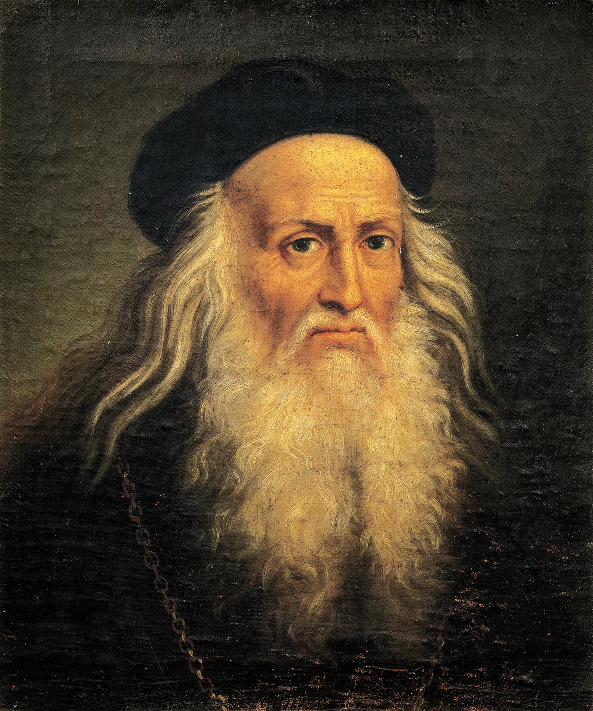

Leonardo da Vinci
Leonardo da Vinci (1452–1519) was a Renaissance polymath whose interests spanned various fields, including art, science, engineering, anatomy, and architecture. Renowned for masterpieces like The Last Supper and Mona Lisa, he was a pioneering figure in both art and scientific inquiry. His detailed notebooks reveal innovative ideas and sketches, reflecting his insatiable curiosity and ingenuity. Da Vinci's contributions laid foundational principles in various disciplines, making him one of history's most influential and versatile geniuses.
Gallery

Inspirational Story
Leonardo da Vinci, starting as a humble apprentice in Florence, faced many challenges. Despite his modest start and pressure to fit in, his curiosity and passion made him stand out. One day, he was given the simple task of painting a backdrop. Instead of treating it as unimportant, he put his all into it, turning it into something extraordinary. This dedication impressed important people and led to opportunities to show his true talent. Leonardo’s story shows that putting your best effort into every task, no matter how small, can lead to great success. His commitment to excellence teaches us that greatness starts with doing even the little things with care and passion.